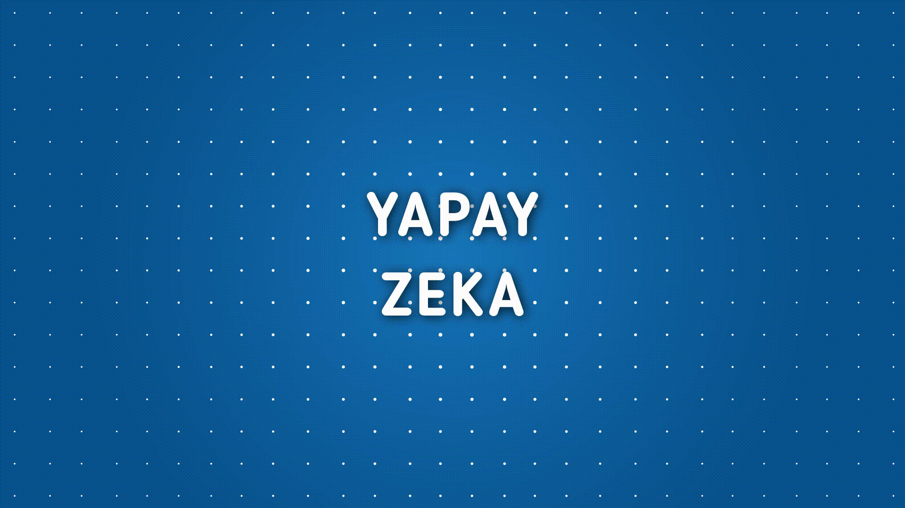
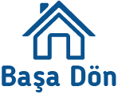

YAPAY ZEKA
Başla
YAPAY ZEKA
Ne Çiziyorsun?
Yapay zeka sizin ne çizdiğinizi tahmin ediyor.
Pek çok kişiden alınan istatistiksel veriye dayanarak
ne çizdiğinizi, siz çizimi bitirmeden anlayan
yapay zeka ağını siz de keşfedin!
İlk Çizimin
KEDİ
